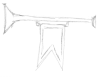

Dante e Verzuolo
Per quanto riguarda la presenza dei frammenti danteschi nell’archivio del comune di Verzuolo si possono ipotizzare alcune teorie, ma non vi sono per ora riferimenti certi e documentati.
La loro presenza nel territorio dell’antico Marchesato di Saluzzo non ci deve stupire.
Questo piccolo potere signorile ebbe tra XV e XVI secolo un ruolo importante tra varie potenze italiane ed europee del tempo e fu testimone di una raffinata e aggiornata cultura artistica e letteraria, come evidenzia la presenza del pittore il fiammingo Hans Clemer, artista di corte del marchese Ludovico II, o quella di botteghe di frescanti itineranti aggiornate sulle novità francesi e liguri.
Nel 1885 il professor Rodolfo Renier, filologo e letterato italiano, diede notizia di un commento a Dante sconosciuto, contenuto in un codice palatino realizzato da un certo Stefano Talice da Ricaldone che in “burgo Liagniaci 1474 Kalendis novembris hora 12”; vista la somiglianza di questo codice con il commento di Benvenuto da Imola, celebre commentatore trecentesco della Commedia, il Renier avanzò il sospetto che non fosse opera autonoma e originale.
Il dato importante che emerge da questa vicenda è la presenza e la circolazione nel XV secolo, in questo territorio pedemontano, di un codice dantesco probabilmente connesso alla consolidata abitudine delle letture pubbliche della Divina Commedia che venivano fatte nel territorio del Marchesato di Saluzzo.
Inoltre Lagnasco, piccolo comune a pochi chilometri da Verzuolo, era residenza della famiglia Tapparelli, prestigiosa casata nobiliare con importanti legami politici, religiosi e culturali tra XV e XVI secolo in tutta la penisola italiana e anche in Europa.
Nel 1992, nella prima trascrizione dei frammenti, gli studiosi, ragionando sulla questione della provenienza delle carte, ipotizzarono un legame con i trovatori, anch’essi itineranti tra Italia e Francia e si è pensato che il codice fosse presente nella biblioteca del castello di Verzuolo, provenendo dal mondo francese d’oltralpe.
E’ importante menzionare il ruolo svolto dagli ordini religiosi nel Medioevo per la conservazione e la diffusione della letteratura, religiosa e laica.
A Verzuolo erano presenti ordini religiosi diversi: i domenicani nel convento sulla collina a San Grato e nella cappella di Santa Cristina, fondata da Aimone Tapparelli di Lagnasco, anche lui domenicano. Più tardi i frati cappuccini fondarono il loro convento ai piedi della collina, nell’attuale parrocchiale dei SS.Filippo e Giacomo, con l’intento di tenere lontano le eresie.
Domenicani e cappuccini potrebbero aprire un’altra via possibile per l’arrivo del codice dantesco a Verzuolo.